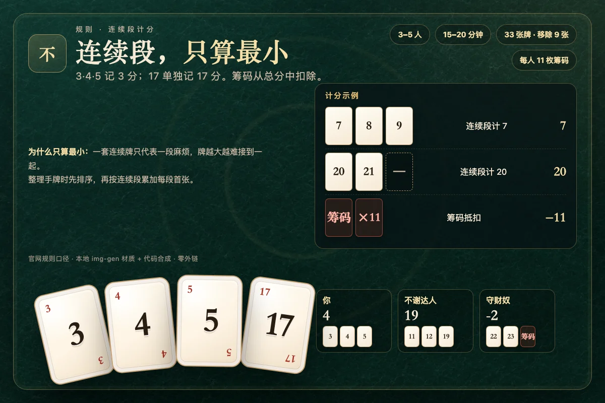

一句话规则：轮到你时，要么把当前数字牌连同牌上所有筹码一起收下，要么付 1 枚筹码把它推给下家。牌堆打空后，按「连续数字只计最小一张」算牌分，再减去手里剩余的筹码，分数最低的人获胜。


一、游戏目标与人数
《No Thanks!》（中文常译「不谢」「不了不了」「不速之礼」）是一款 3 至 5 人的轻量卡牌游戏，单局约 15 到 20 分钟。它不是比谁收的牌多，而是比谁的「净负担」最小。每收一张牌都会增加你的牌面分数，每保留一枚筹码都会在终局抵扣 1 分。因此游戏的核心不是单纯躲避，而是判断「这张牌现在值不值得我花钱躲开」。
本实现采用 3 人单机模式：你坐在下方，两位 AI 分别是「不谢达人」和「筹码守财奴」。AI 会计算收牌的边际分数、邻牌价值、牌上筹码数量以及剩余牌数，不会机械地见牌就收，也不会无脑跳过。
二、游戏组件
- 数字牌 33 张：从 3 到 35，每个数字一张。
- 筹码：每位玩家 11 枚，共 33 枚（3 人局）。
- 起始时从 33 张牌中随机移除 9 张，正面朝下移出游戏，任何人都不查看。因此实际参与游戏的牌只有 24 张。
被移除的 9 张牌是本作唯一的信息盲区。你不能确定某个数字是否还在牌堆里，这会影响「再等一等，也许下家会收走」的判断。牌堆顺序同样隐藏，页面只公开当前牌、牌上筹码、每人已收的牌和剩余张数。
三、回合流程
- 翻开牌堆顶的一张数字牌，放在桌子中央，牌上筹码初始为 0。首位玩家先行动。
- 轮到你时，从下面两个动作中二选一：
- 收下：把当前数字牌加入自己的牌区，同时拿走牌上全部筹码。然后翻开下一张牌，轮到下一位玩家。
- 跳过：从自己手里支付 1 枚筹码放到当前牌上，把选择权交给下一位玩家。牌上筹码累积，下一位若收牌就能全部拿走。
- 如果一名玩家手里已经没有筹码，他就不能跳过，必须收下当前牌。
- 当第 24 张参与游戏的牌被收走后，牌堆为空，游戏立即结束并结算。
四、计分方式
先算牌面分：把你收下的所有牌按从小到大排列，每一段连续数字只计算其中最小的一张，其余牌算 0 分。再把所有牌面分相加，减去你手中剩余的筹码数量，得到最终分数。最终分数最低者获胜；同分则并列。
| 你收下的牌 | 牌面分 | 说明 |
|---|---|---|
| 8、9、10 | 8 | 一段连续数字，只算 8 |
| 3、4、5、10、11 | 13 | 两段连续数字，分别算 3 和 10 |
| 7、9、20 | 36 | 没有相邻数字，三张都要算 |
| 17 | 17 | 单张按面值计算 |
示例：你收下 3、4、5、10、11，手里还剩 6 枚筹码，则最终分数为 3 + 10 − 6 = 7 分。如果另一位玩家收下 20、21、22，剩余筹码 4 枚，他的分数是 20 − 4 = 16 分，你获胜。
五、策略要点
- 邻牌最值钱。如果你已经有 17，那么 16 或 18 几乎等于免费：它们会和 17 组成连续段，只按 16 或 17 计一次分。反过来，孤立的 30 多分大牌应当尽量躲开。
- 筹码是有限资源。11 枚筹码看起来很多，但一局中你最多可能支付十几次。把筹码花在 25 分以上的孤立大牌上，通常比花在 10 分左右的小牌上更划算。
- 观察牌上补贴。当牌上已经堆了 5 到 8 枚筹码时，收牌的实际成本可能已经变成负数。此时不要被「这是 30 分大牌」吓住，先算边际分。
- 末盘不要拖。只剩几张牌时，你跳过后牌未必会回到你面前。若手里筹码不多，尽早收下能接受的牌，避免最后被迫收更大的牌。
- 记住已出现的牌。被移除的 9 张牌未知，但已经收走的牌是公开信息。某个数字迟迟不出现，不代表它一定还在牌堆里。
六、本实现的交互说明
- 主按钮会显示「收下 X（+N 筹码）」或「付 1 筹码跳过（余 N）」，按钮高度不低于 44 像素，适合触控。
- 当前行动玩家会有呼吸式高亮；牌面翻开会播放发牌动画，筹码落到牌上会有弹跳动画，收牌与结算各有独立音效。
- 右上角 ◐ 切换深色 / 浅色主题，♪ 开关音效。两项设置都会保存在本机，刷新后仍保留。
- 快捷键：轮到你时按 T 或 Enter 收牌，按 P 跳过（无筹码时不可用）。
- 页面完整离线运行，不加载外部字体、图片、脚本或样式表。音频由 WebAudio 实时合成。
七、B 站规则来源
- 【勃根地桌遊】禮物 No Thanks 桌遊教學影片 UP：南风丶小草 · BV1v7411A7T3 · https://www.bilibili.com/video/BV1v7411A7T3 规则要点：起手 11 枚筹码；收牌时连同牌上筹码一起拿走；连续数字只计算最小的一张。
- 【Superduck 桌游介绍】No thanks 不速之礼 UP：SuperduckH · BV1YP4y1b7tG · https://www.bilibili.com/video/BV1YP4y1b7tG 规则要点：33 张牌先移除 9 张；没有筹码时必须收牌；24 张牌全部被拿走后结算。
- 桌游介绍第一期：No thanks不谢牌讲解及玩法展示！ UP：CPG_Knight · BV19M4y1r7RB · https://www.bilibili.com/video/BV19M4y1r7RB 规则要点：跳过支付 1 枚筹码；筹码在终局抵消分数；低分玩家获胜。
以上视频仅作为规则校对来源；本页文字、牌面图形、动画与 AI 均为本项目原创实现，未复制视频画面或音频。
八、常见问题
问：可以看被移除的 9 张牌吗？不可以。正式规则中它们背面朝下移出游戏，任何玩家都不能查看。本实现在对局结束前也不会把移除牌放进页面数据。
问：收牌后，牌上的筹码会回到公共池吗？不会。筹码直接归收牌者所有，成为他的私人物品，终局按 1 枚 1 分抵扣。
问：两个人可以玩吗？官方基础规则面向 3 至 5 人。本实现固定 3 人，以保证跳过与轮转的博弈成立。2 人局会让「把牌推给唯一的对手」过于强势，因此没有采用。
问：同分怎么办？并列获胜。结算面板会把所有最低分玩家标为胜者。